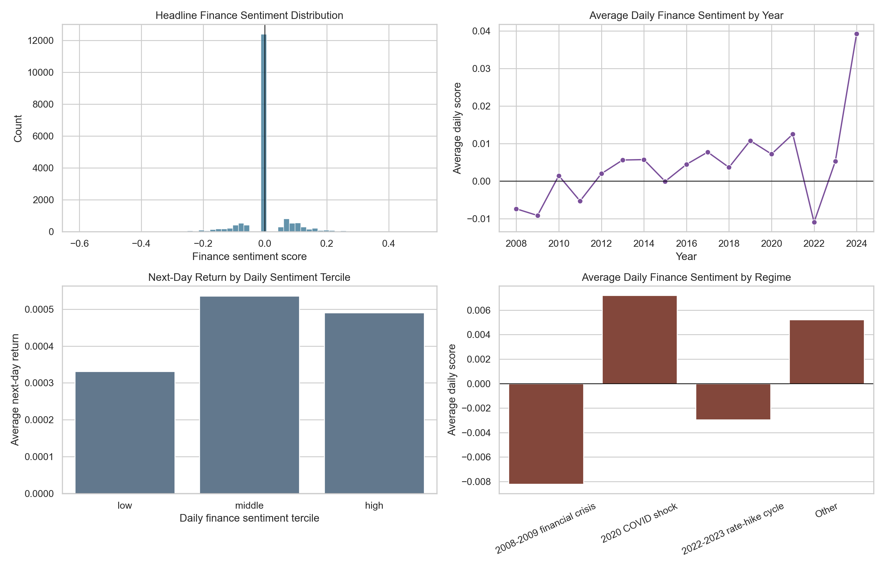
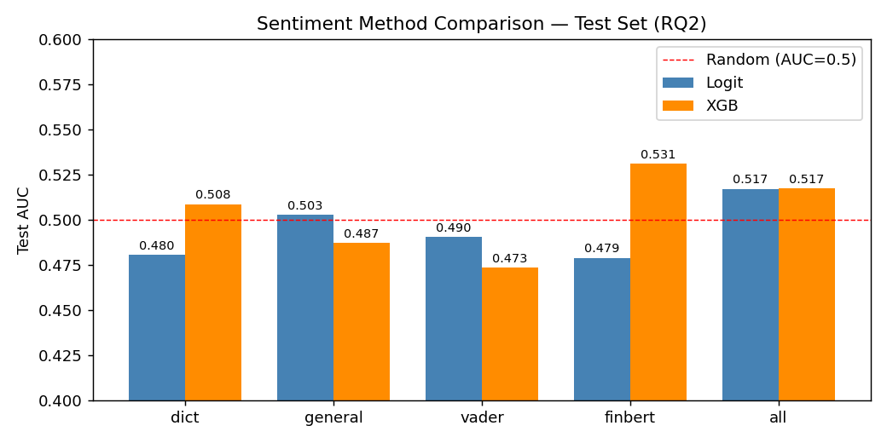
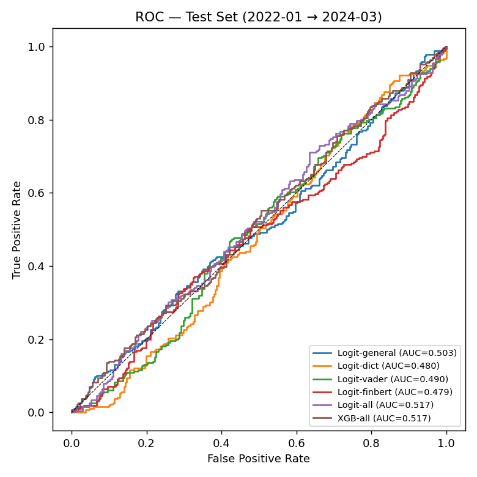
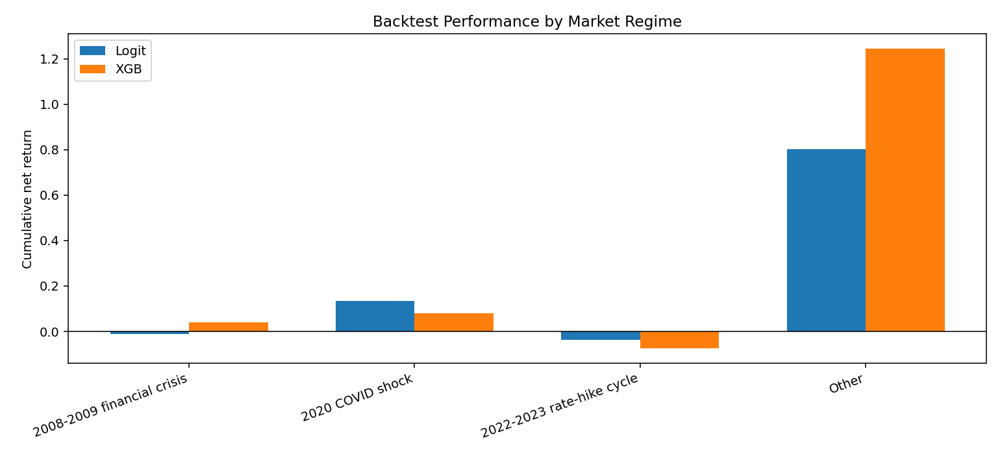
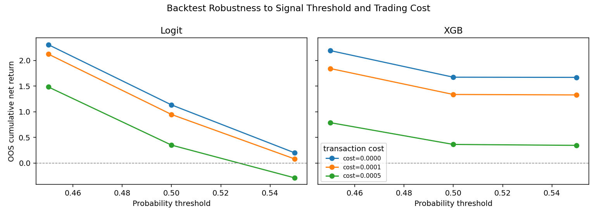
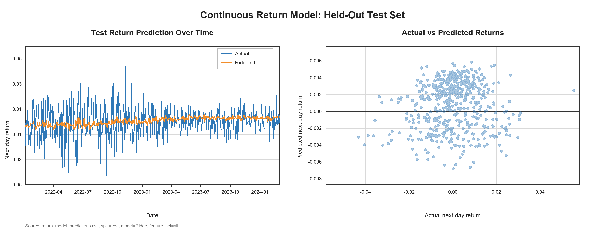

DATA 498D Capstone
Does Financial News Sentiment Move the S&P 500?
We tested whether daily financial headlines contain useful information about next-day S&P 500 direction, returns, and simple trading performance.
Bottom line
Headline sentiment is weak, unstable, and regime-dependent.
Finance-specific signals sometimes help in selected backtests, but they do not create a reliable next-day prediction edge.
Raw headline rows
19,127
2008-01-02 to 2024-03-04
Prepared daily rows
3,506
after duplicate removal and daily aggregation
Best test balanced accuracy
51.4%
XGB with VADER features
Best selected test return
13.1%
Logit with FinBERT, long/flat backtest
Dataset
Headline volume changes the research problem
The raw data is headline-level, then aggregated to daily observations with next-day return and direction targets. Headline density rises sharply after 2019, so the project treats source drift as a core limitation.
Regime Context
daily sampleSentiment Analysis
Simple sentiment does not move in a clean line with next-day returns
Dictionary sentiment provides an interpretable baseline. The tercile view is useful for presentation because it shows the central result clearly: the middle sentiment group has the highest average next-day return, not the highest group.
Finance Sentiment Terciles
next-day outcomesKey descriptive numbers
- Avg finance sentiment vs next-day return
- -0.012
- Avg finance sentiment vs next-day direction
- 0.022
- High sentiment next-day return
- 0.049%
- High sentiment up-day rate
- 54.1%
These values are small enough that sentiment alone should be framed as a weak descriptive relationship, not a stand-alone prediction system.

Predictive Modeling
Models stay close to baseline on held-out direction prediction
Logistic regression and XGBoost were compared across dictionary, general, VADER, FinBERT, and all-feature sets using time-aware validation and test splits.
Test-Set Model Comparison


Economic Evaluation
Backtests look more interesting than classification metrics, but the edge is fragile
The long/flat strategy is long when predicted up-day probability clears the validation-selected threshold and flat otherwise. A 1 basis point cost is charged when position changes.
Selected Test Backtests
Signal Reality Check
The best-looking backtest is not the whole story
The all-feature models mostly behave like buy-and-hold on the test set, while the more selective sentiment variants trade less often. This is why we discuss return, exposure, drawdown, and trade count together.
Presentation framing
The FinBERT and VADER variants are the most presentation-friendly examples: they show that finance-aware sentiment can help in some settings. The honest interpretation is that this is a fragile signal, not a stable trading rule.
Regime Evaluation
The same model behaves differently across market periods
This is the strongest part of the evaluation story. It explains why a single overall accuracy number is not enough for a market project.


Held-Out Rate-Hike Cycle Results
2022-2023 test regimeFinal Story
What the project shows
Daily headline sentiment is not a strong predictor
Correlations are small, direction models hover near chance, and continuous return models barely improve over a historical mean.
Finance-specific language can still be useful
FinBERT and VADER variants show better selected backtests than simple dictionary baselines, but the gains need careful validation.
Evaluation choices decide the credibility of the result
Regimes, thresholds, exposure, transaction costs, and failure cases turn a simple model comparison into a more honest project conclusion.
What We Would Do Next
Stronger data would matter more than a more complicated model
8-12 Minute Speaking Flow
One clean way for all five members to speak
- Jiawei Guo: problem, dataset, cleaning, limitations.
- Chaoran Chen: sentiment methods and topic features.
- Haoyang Liu: modeling design and test metrics.
- Haonan Li: backtest, regimes, robustness, failure cases.
- Duli Lei: conclusion, next steps, final wrap-up.
